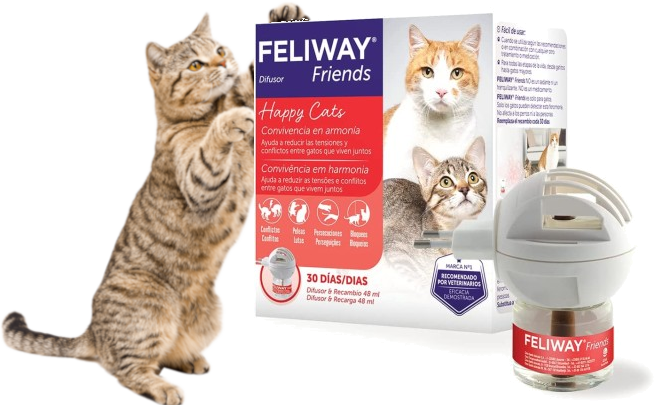
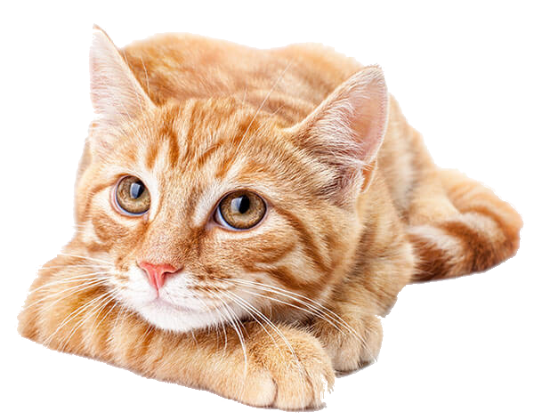

PRODUCTOS
Calidad & ExperienciaSomos una clínica veterinaria que se dedica a la prestación de un servicio integral en los ámbitos de los cuidados clínicos veterinarios y asesoramiento, contamos con los mejores proveedores y tenemos convenios con los mejores laboratorios, las marcas más recomendadas y avaladas por la ciencia y el Ministerio de Salud. |
 |
NUESTROS SERVICIOS
Ofrecemos servicios de alta calidadConozca todos los servicios que ofrecemos Somos un equipo de Médicos Veterinarios y personal capacitado para la atención integral de las mascotas, on el fin de restablecer, mejorar y resguardar la salud, así como prevenir y evitar las enfermedades que puedan adquirir. |
 |
Gracias por visitarnos
Muchas gracias por ver nuestro contenido y todo lo que tenemos para ofrecerte, esperamos haya sido de tu agrado y cuentes con todo lo que tenemos para como herramientas en tu vida y la de tu mascota, y hagas uso de esta en caso que las necesites, así como para una mejor vida y bienestar de tu amigo peludo, seguro te lo agradecerá, siempre será un placer para nosotros atenderlos de la mejor manera, con los mejores profesionales y con los mejores productos de la más alta calidad, hasta la próxima.
Happy Coding!,
Clark.